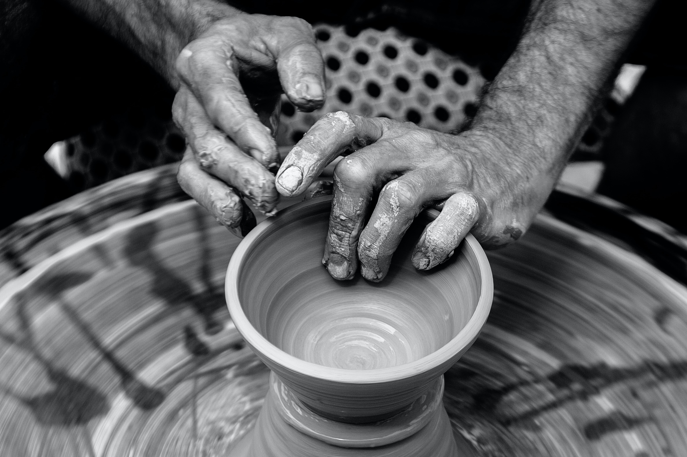
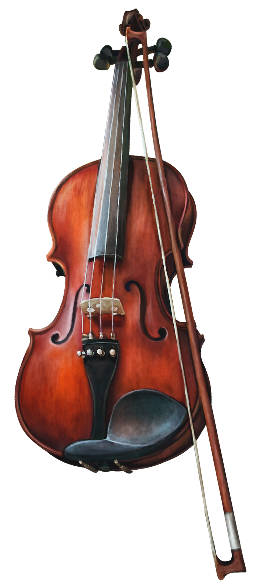
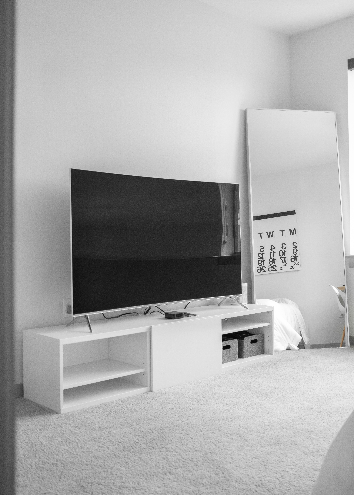
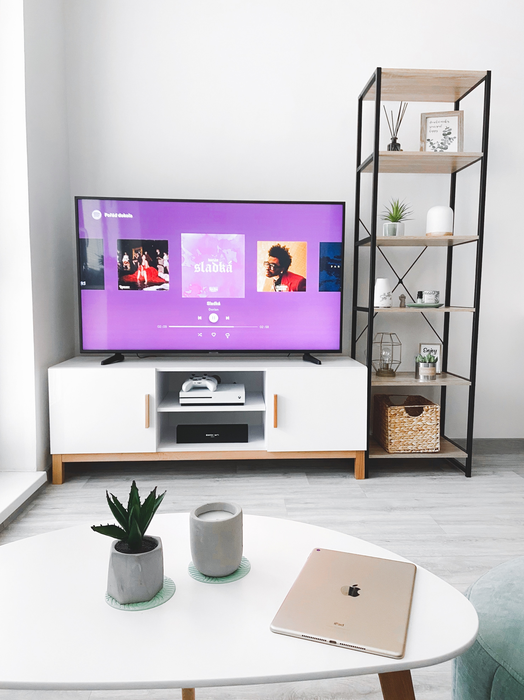

Hi I'm Kebin Kelvin-Iwariso
NICE
TO
MEET
YOU
About Me
Hello, I am Kebin Kelvin-Iwariso.
You might ask, what do you do Kebin ?
My answer would be that i am a man of divers knowledge.
I am good at several skills and looking forward to being perfect in them.
I don't joke with knowledge, i take every lesson in my Life very important.
There is something i believe in, and I hope that before you leave my portfolio, you would see this.

Kebin as a potter
Pottery is a unique skill i learnt when i was in primary school. We(classmates) were
told to create beautiful pieces out of clay which some of my classmates pieces were on the top list of best including mine.
Although some of my classmates pieces
where incredibly strange but still unique. They didn't fully master the elements of
great pottery. But at the end, I learnt something from my classmates pieces that
weren't realistic.
What was that ?
It is in our hands to create the impossible.

It is in our hands to create the impossible.
Kebin as a violinist
What can sound so melodious. Its beautiful sound can wipe all your sorrows away.
Its the violin.
The violin reminds me of perfection in disguise.
You may ask, Kebin, What do you mean ?
I mean that the melodious sound the violin creates, makes me wonder, how such a small instrument
could produce such a great and magnificent sound.
Beauty isn't what you may always expect. It could be what you've negleted

Kebin as a programmer
Some may ask, Kebin who made this your pathetic website ? (Lol)
Just kidding. My answer would be that...
I made it myself. One of my skill is computer Programming. Programming has really challenged me to put my brain and intellect to the test. It makes me to improve and explore what i could possibly do with my knowledge in computer Programming.Sometimes you cannot know what you are capable of except you are put to test.
Just kidding. My answer would be that...
I made it myself. One of my skill is computer Programming. Programming has really challenged me to put my brain and intellect to the test. It makes me to improve and explore what i could possibly do with my knowledge in computer Programming.Sometimes you cannot know what you are capable of except you are put to test.


Believing is power
Belief is powerful
It shapes your thoughts, actions and future.
Do you know what believing in something does ?
It makes what others see as impossible a reality to you.
You know what ? I believe in God and that He exists even if no one agrees.
I believe that He is watching and guiding me. Believing in something sometimes gives you hope to continue living
It shapes your thoughts, actions and future.
Do you know what believing in something does ?
It makes what others see as impossible a reality to you.
You know what ? I believe in God and that He exists even if no one agrees.
I believe that He is watching and guiding me. Believing in something sometimes gives you hope to continue living
Purpose
Purpose defines a person.
Have you ever asked yourself before, why was i born ?
I don't know about you, but i don't think that people were born just to occupy the earth. I believe that everyone is unique and has a role to play in other to achieve greatness. Sometimes the role you play would affect generations to come ,but in the end, if you fulfill your purpose, then I believe you would be happy. Great men did great things because it was their purpose.
Have you ever asked yourself before, why was i born ?
I don't know about you, but i don't think that people were born just to occupy the earth. I believe that everyone is unique and has a role to play in other to achieve greatness. Sometimes the role you play would affect generations to come ,but in the end, if you fulfill your purpose, then I believe you would be happy. Great men did great things because it was their purpose.
Meditation
Maintaining balance is essential in our lives
We would not be able to maintain this balance if our minds are stressed. As humans, we often involve in activities that stresses us, which leads to sickness, bitterness, loss of concentration.etc..
This is why i meditate in other to have a balanced and peaceful mind. Meditation is one key in maintaining the inner power of every man.
We would not be able to maintain this balance if our minds are stressed. As humans, we often involve in activities that stresses us, which leads to sickness, bitterness, loss of concentration.etc..
This is why i meditate in other to have a balanced and peaceful mind. Meditation is one key in maintaining the inner power of every man.







What's your purpose ?
You have an essential role to play, do not waste your precious life
thankyou for visiting my portfolio